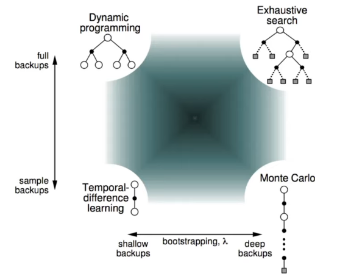
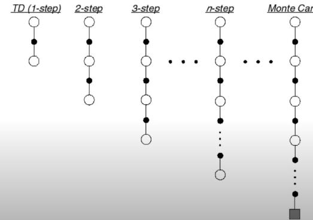

Introduction
Previously, we talked about using Dynamic Programming, that have access to the full model, to solve optimal Bellman’s Equation using MDPs. Thus, DP can learn directly from the interaction with the environment.
In this Notebook, we will study model free learning methods that do not require the full model’s knowledge but only experience to attain optimal behaviour.
Monte Carlo Algorithm
Monte Carlo (MC) methods are ways of solving the reinforcement learning problem based on averaging sample returns for episodic tasks. Only a completion of an episode, the value estimates and policies will be changed.
Here, we talked about an episode which is defined as an trajectory of experience having some natural ending points.
MC is a model free algorithm because it does not require any knowledge of MDP but only interaction returns or samples. As a concrete example, multi-armed bandit can be considered as a MC algorithm because the average reward samples (action values) are estimated for each action.
In the update form, the iterative true value of an action under multi-armed bandit is calculated as below: \[ q_{t+1}(A_t) = q_t(A_t) + \frac{1}{N(t)} (R_{t+1} - q_t(A_t)) \]
Let’s extend slightly the above bandit problem with different states. In MAB, the episodes are 1 step long as the bandit case before and it means that the actions do not affect the state transitions (you perform an action and you might see a new state that does not depend on your action.). Now, multiple states may appear and do not depend on the actions taken which means there is no long-term consequences. Then the goal is to estimate the action value that is conditioned on the action and state (contextual bandit). \[ q(s,a) = \mathbb{E} [R_{t+1} | S_t=s, A_t=a] \]
Value Function Approximation
So far, we talked about the computation of values in MDP are based on the look up table. But it comes with a problem when a large MDP is introduced when it will consume a huge amount of memory to store every value entry.
A possible solution for those problem is to use function approximation where the value function and action value function can be parameterized. Then, the parameter will be updated to obtain a value function instead of updating a huge entry during the learning process. \[ v_w(s) \approx v_\pi(s) \\\\ q_w(s,a) \approx a_\pi(s,a) \\\\ \]
In model free learning, parameter \(w\) can be updated as MC Algorithm or Temporal Difference Learning to generalize the unseen states.
In case of the environment state is not fully observable, we will use agent state \(S_t = u_w(S_{t-1},A_{t-1},O_t)\) parameterized by parameters \(w\). Then, the current state is just a function of previous inputs.
Linear Function Approximation
We will make a concrete example of a linear function approximation, where linear function can be represented a fixed feature vectors.
\[ x(s)=\begin{pmatrix} x_1(s) \\ ... \\ x_m(s) \\ \end{pmatrix} \]
By doing that, we can transfer the states into a bunch of vectors with elements.
Then, the linear function approximation approach takes these features and defines our value function to be in the inner product.
\[ v_w(s) = w^Tx(s) = \sum_{j=1}^n x_j(s)w_j \]
To update the our weights \(w\), we need some sorts of objective. In our concern, the predictions will be the case so the objective will be the minimization of the loss between the true value and our estimate. \[ L(w) = \mathbb{E} [(v_\pi(S) - w^T x(S))^2] \]
By apply Stochastic Gradient Descent for this objective, it will converge to global optimum of this loss function because the loss function is convex.
Then, the update rule is relatively simple because the gradient of the value function with respect to our parameter \(w\) is the feature \(x\) and the stochastic gradient update if we would have the true value function \(v_\pi\) will be the step size times the error terms of prediction errors and the feature vector. \[ \Delta w = \alpha (v_\pi(S_t) - v_w(S_t))x_t \]
Basically, the table lookup is a special case of linear value function approximation. Let’s n states be given by \(\mathcal{S} = \left\{s_1,...,s_n \right\}\)
One hot feature represents the zeros on almost of the component except on the component that correspond the the state that we care about.
\[ x(s)=\begin{pmatrix} \mathcal{I}(x_1(s)) \\ ... \\ \mathcal{I}(x_m(s)) \\ \end{pmatrix} \]
Then, parameter \(w\) contains just value estimates for each state.
$ v(s) = w^Tx(s) = _j w_j x_j(s) = w_s $
Model-Free Prediction
Basically, q could be a parametric function (neural network) and we could use the following loss \[ L(w) = \frac{1}{2} \mathbb{E} [(R_{t+1} - q_w(S_t,A_t))^2] \]
The gradient update will be
\[ w_{t+1} = w_t - \alpha \triangledown {w_t} L(w_t) \\\\ = w_t - \alpha \triangledown _{w_t} \frac{1}{2} \mathbb{E} [(R_{t+1} - q_w(S_t,A_t))^2] \\\\ = w_t + \alpha \mathbb{E} [(R_{t+1} - q_w(S_t,A_t)) \triangledown _{w_t} q_{w_t}(S_t,A_t) ] \]
In case of a large continuous state space \(\mathcal{S}\) appears, it is just regression.
If the action value function can be represented as a linear function, e.g. \(q(s,a) = w^T x(s,a)\), then \[ w_{t+1} = w_t + \alpha (R_{t+1} - q_w(S_t,A_t)) x(s,a) \]
MC Policy Evaluation
Now, let’s consider sequential decision problems where the objective is to learn \(v_\pi\) from episodes of experience under policy \(\pi\) under discouted factor \(\gamma\)
\[ S_1, A_1, R_2, ..., S_k \sim \pi \]
The discounted reward will be: \[ G_t = R_{t+1} + ... + \gamma ^{T-t-1} R_T \]
The expected return : \[ v_\pi(s) = \mathbb{E}[G_t | S_t=s, \pi] \] Here, we could use sample average return instead of expected return as the target of our updates and it is called Monte Carlo policy evaluation.
Drawbacks of MC Learning
- When episodes are long, learning can be quite slow because we need to wait until the end of the episode before start updating (The return is not well defined before we do.) and the return can have high variance.
Temporal Difference Learning
Let’s remind about the Bellman’s equation relates the value of a state with the value of the next state and it is the definition of the value of a policy. \[ v_\pi(s) = \mathbb{E} [R_{t+1} + \gamma v_\pi(S_{t+1}) | S_t=s, A_t \sim \pi(S_t)] \]
Before that, we learned that we can approximate these values by tuning this definition into an update where \(v_\pi\) is now replaced with the current estimate \(v_k\). However, we should notice that the update can not happen at time step t because it is not known yet the return at time step t. This iterative algorithm do learn and the do find the true value for the policy. \[ v_{k+1}(s) = \mathbb{E} [R_{t+1} + \gamma v_k(S_{t+1}) | S_t=s, A_t \sim \pi(S_t)] \]
It suggested that we can sample this so that $v_{t+1}(S_t) = R_{t+1} + v_t(S_{t+1}) $. then, it is better to take a small step with parameter \(\alpha\) than do all the way like that, so \[ v_{t+1}(S_t) = v_t(S_t) + \alpha _t (R_{t+1} + \gamma v_t(S_{t+1}) - v_t(S_t)) \]
It is very similar to MC algorithm but instead of updating towards a full return, we are going to update the target \(R_{t+1} + \gamma v_t(S_{t+1})\). So it uses our current value estimates instead of full return. It is called temporal difference learning
So, in temporal difference learning, the new target unrolls the experience one step and then uses our estimates to replace the rest of the return. The temporal difference error(\(\delta _t\)) now is the difference in value from what we currently thing (\(v_t(S_t)\)) comparing to the one step into the future (\(R_{t+1} + \gamma v_t(S_{t+1})\))
Bootstraping and Sampling
Az we might notice now, Temporal Difference Learning combines the bootstraping approach of Dynamic Programming to derive the current estimate as part of the targer for the update and Sampling which does not require a model.
Then we can apply the same idea to the action values where we have some action value function q and we do exactly as before.
\[ q_{t+1} (S_t,A_t) \leftarrow q_t(S_t,A_t) + \alpha (R_{t+1} + \gamma q_t(S_{t+1}, A_{t+1}) - q_t(S_t,A_t)) \]
This algorithm is called SARSA because it uses a state action reward state and action \((S_t,A_t,R_{t+1}, S_{t+1},A_{t+1})\)
Temporal Difference Learning Properties
There are several properties of TD that we can take notice: - TD is model-free since it does not require the knowledge of MDP and it can learn directly from experience. - TD can learn from incomplete episodes bu bootstraping. It means that we dont have to wait all the way long until the end of episode before we can start learning. - TD can learn durning each episode.
Pros and Cons of MC and TD
TD can learn before knowing the final outcomes because it can learn online after every step whereas MC must wait until the end of episode before return is known.
TD can learn without the final outcome, then TD can learn from incomplete sequences but MC can only learn from complete sequences. Additionally, TD works in continuing environment and MC works for episodic environments.
TD nees reasonable value estimates because the update is based on the estimation, so the bad estimate can lead to the low performance.
Bias/Variance trade-off
Practically speaking, MC return is an unbiased estimate of the true value but TD target is a biased estimate of the true value. In exchange, TD target has lower variance because the return in MC depends on many random actions, transitions, rewards but Td based merely on one random action, transition and reward.
Batch mode of MC and TD
We have seen so far that tarbular MC and TD converge \(v_t \rightarrow v_\pi\) as experience \(\rightarrow \infty\) and \(\alpha_t \rightarrow 0\). But let’s see what happen when we only have finite experience by considering fixed batch of experience $$ S_1^1, A_1^1, R_2^1, …, S^1_{T_1} \ . \ . \ . \ S_1^K, A_1^K, R_2^K, …, S^1_{T_K}
$$
Here, instead of having a real model with every transitional probabilities, we only have observed frequencies of transitions (emperical model)
By using MC learning, it will converge to best mean-squared fit for the observed returns ${k=1}^K {t=1} ^{T_k} (G_t^k - v(S_tk))2 $ by miniminzing this difference.
On the other hand, TD converges to solution of max likelihood Markov model, given the data samples.
Therefore, TD exploits Markov property by means of helping in fully observable enioronments but MC does not.
Unified view of Reinforcement Learning
Let’s compare different RL algorithms where Dynamic Programming has been put on the top left corresponding to shallow update where we just look one step and full breadth into the future and we have full access on it (we need a model).
Besides full breadth, if we can access on the full depth of the model, it would give us exhaustive search.
If we go all the way down, it exists an algorithm that only look at one trajectory and it is useful when we have only samples or we only deal with the interaction. TD appears on the bottom left and MC is on the bottom right. TD can be thought as having the breadth of one and depth of one so we can just take one step in the world and we can use that to update a value estimate whereas MC makes a very deep update when it rolls until the end of the episode and it use full trajectory to updates its value estimates.

Following these principles, TD learning might not be accurate as it uses value estimates and additionally, information can propagate back quite slowly in some cases. MC information propagates faster as ot acknowledge all the state that have been visited before, but it comes with the cost of noisiy updates (high variance).
to go between MC and TD, we proposed Multi-step update
Multi-step prediction
Now, instead of looking exactly one step ahead as TD does, we could consider n-step ahead

In general, the n-step return is defined as \[ G_t^{(n)} = R_{t+1} + \gamma R_{t+2} + ... + \gamma^{n-1} R_{t+n} + \gamma ^n v(S_{t+n}) \]
Then, the multi step TD learning can be transformed into the update as following: \[ v(S_t) \leftarrow v(S_t) + \alpha (G_n^{(n)} - v(S_t)) \]
Mixed Multi-step return
Previously, if we have n-step return, we take one step \(R_{t+1}\) and then we add \(n-1\) one step return $G_t^{(n} = R_{t+1} +G_{t+1}^{n-1} $.
It means that every step we lose one step until we have only one step left and then one step return will then bootstrap one our state value.
It means that we fully continue with random samples with trajectory in some steps but on other steps we fully stop and do bootstraping.
It is not necessarily applying the bootstrap at the end of the trajectory but we can do bootstraping a little bit with a parameter \(\lambda\)
\[ G_t^ \lambda = R_{t+1} + \gamma((1-\lambda)v(S_{t+1}) + \lambda G_{t+1}^\lambda) \]
Now, instead of fully continuing or boostraping , we can do bootstraping a little bit that is controlled by \(\lambda\). This is a linear interpolation between our estimated matrix value and the rest of lambda return., Mathematically, it equals to the weighted sum of n-step return . \[ G_t^\lambda = \sum _{n=1} ^\infty (1-\lambda) \lambda ^{n-1} G_t ^{(n)} \\ \sum _{n=1} ^\infty (1-\lambda) \lambda ^{n-1} = 1 \]
If \(\lambda=0\) the return will be the same as TD case. If \(\lambda=1\), the update will follow MC algorithm.
Benefits of multi-step returns
- Multi-step return have both benefits of TD and MC
- Bootstraping can have issues with bias
- MC can have issues with variance
- Then immediate values of n and \(\lambda\) are good.